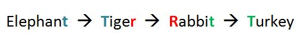
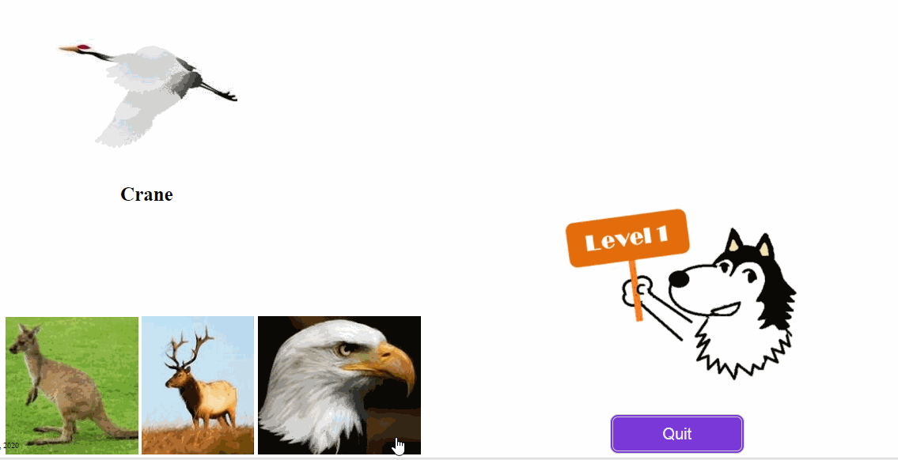

How to play:
This is a word game called "shi-ri-to-ri" in Japanese. You simply need to find a word that starts with the last letter of the previous word as shown below.
In this game, you will see only photos, not the words.
At levels 1 through 3, the first animal is already selected. You will need to place the photos at the bottom of the window in an appropriate order.
Click one of the photos you think that will come next.

If you place a correct photo, you will see a green circle.
If you place an incorrect photo, you will see a red cross. Then click the incorrect photo to bring it back.
Once you place all photos correctly, click "Go to next level" to move to the next level or "Quit" to go back to home.
There are 5 levels. Each level has 3 patterns. You have 243 ways of completing this game.
From level 3, the names of the animals will not appear until you place all photos correctly. From level 4, you will not even see the first animal. You will need to place all photos by yourself.